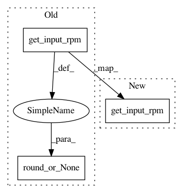

75a053cd12ec210c70e5140289e2106434e60d62,w3af/core/controllers/core_helpers/status.py,CoreStatus,get_grep_input_speed,#CoreStatus#,276
Before Change
def get_grep_input_speed(self):
gc = self._w3af_core.strategy.get_grep_consumer()
return None if gc is None else round_or_None(gc.in_queue.get_input_rpm())
def get_grep_output_speed(self):
gc = self._w3af_core.strategy.get_grep_consumer()
return None if gc is None else round_or_None(gc.in_queue.get_output_rpm())
After Change
def get_grep_input_speed(self):
gc = self._w3af_core.strategy.get_grep_consumer()
return 0 if gc is None else gc.in_queue.get_input_rpm()
def get_grep_output_speed(self):
gc = self._w3af_core.strategy.get_grep_consumer()
return 0 if gc is None else gc.in_queue.get_output_rpm()
In pattern: SUPERPATTERN
Frequency: 3
Non-data size: 3
Instances
Project Name: andresriancho/w3af
Commit Name: 75a053cd12ec210c70e5140289e2106434e60d62
Time: 2018-07-23
Author: andres.riancho@gmail.com
File Name: w3af/core/controllers/core_helpers/status.py
Class Name: CoreStatus
Method Name: get_grep_input_speed
Project Name: andresriancho/w3af
Commit Name: 75a053cd12ec210c70e5140289e2106434e60d62
Time: 2018-07-23
Author: andres.riancho@gmail.com
File Name: w3af/core/controllers/core_helpers/status.py
Class Name: CoreStatus
Method Name: get_crawl_input_speed
Project Name: andresriancho/w3af
Commit Name: 75a053cd12ec210c70e5140289e2106434e60d62
Time: 2018-07-23
Author: andres.riancho@gmail.com
File Name: w3af/core/controllers/core_helpers/status.py
Class Name: CoreStatus
Method Name: get_audit_input_speed